Rotate, register, blend
The same scene appears at different image coordinates as a camera turns. Part A estimates this relationship from 16 manually verified landmarks in every adjacent pair; Part B finds those landmarks automatically. Every panorama shown below uses all frames of its sequence. Compact planar spans are retained as a controlled homography baseline, while a cylindrical output accommodates each full, wider sweep.
One point, three coordinates
A perspective warp maps a homogeneous source point p to a destination point p′ using a 3×3 homography. Inverse mapping assigns each output pixel a source sample and avoids holes.
Iout(q) = Isrc(H−1q)
Two ways to find the geometry
| Part A | Capture three overlapping sequences; hand-check correspondences; solve least-squares homographies; implement two samplers, two rectifications, and feathered mosaics. |
|---|---|
| Part B | Detect Harris corners, apply ANMS, form normalized 8×8 descriptors, ratio-match, and fit four-point RANSAC homographies before mosaicing. |
| Extension | Inverse-project all frames onto a cylinder when the field of view is too wide for one stable planar canvas. |
Image warping and mosaicing
All point pairs, homographies, rectifications, and images below are generated from the included resized inputs. The original full-resolution captures remain in the project workspace.
Three overlapping capture sequences
The street and garage are the two primary real-camera sets. The virtual set supplies a third architectural case with controlled camera rotation and strong shared structures. Neighboring views overlap around buildings, columns, and the decorated gate; sky and moving objects are not used as primary landmarks. Every frame below participates in a full panorama later in the report.

Outdoor street · frames 1–5. One turning sequence around a city intersection and large glass building.

Indoor garage · frames 1–10. A much wider turn with repeated columns, cars, and ceiling beams.

Virtual architecture · frames 1–5. Shared building details, rather than changing clouds, anchor the correspondences.
Sixteen constraints per adjacent pair
The final JSON contains 16 landmark pairs for each of the 4 outdoor, 9 garage, and 4 virtual transitions. The manually dragged virtual edits are preserved; one imprecise destination point was snapped 10 px left and 4 px up after comparing its local texture. This is a local correction, not a replacement of the user's large moves.


Overdetermined least squares
Fix h33=1. Each correspondence (x,y)→(u,v) contributes two rows, so 16 pairs give a 32×8 system. I normalize each point set, solve the eight unknowns with least squares, then denormalize H.
[x y 1 0 0 0 −ux −uy] h = u
[0 0 0 x y 1 −vx −vy] h = v
A h = b
Outdoor frame 1 → 2
H = [[ 0.424727, 0.048149, 422.304858],
[-0.258685, 0.781745, 108.137303],
[-0.000499, -0.000046, 1.000000]]
Sixteen points give a 2.35 px RMS reprojection error. Across all 17 manually annotated pairs, the RMS range is 0.49–2.80 px. The measurement file contains every fitted matrix and error.
Inverse sampling and two rectifications
For each output pixel, the inverse homography identifies a floating-point source coordinate. My nearest-neighbor routine rounds to one pixel; my bilinear routine weights the surrounding four. Both are implemented directly with NumPy indexing. On one 1080×624 local run, nearest sampling took 0.153 s and bilinear 0.267 s. Bilinear reduces staircase edges, while nearest is cheaper and preserves block boundaries.


Rectification 1 · toward the reference viewpoint
The original 2240×1294 oblique image contains five floor lights also visible in the independent overhead reference. I manually paired the three center lights and the two side lights, fitted an overdetermined floor homography, and warped the original pixels into the reference coordinate system. The panels below use the same reference crop. The center cross and lights now have the reference's orientation and approximate positions; no reference pixels are copied into the reconstruction.


Rectification 2 · the complete angled gate
The first attempt used a partly cropped gate and did not straighten it. Here the fully visible second virtual frame supplies all four facade corners. Mapping those corners to a rectangle makes the side posts vertical and the upper frame level. The curved arch itself remains curved, as its shape belongs to the building.


Three complete manual panoramas
Pairwise transforms are composed into a middle anchor frame. Each image is sampled once on the shared canvas. Overlap colors use a source-edge feather weight, then are divided by the sum of weights. Black borders indicate uncovered rays. The input strips in A.1 show every source frame for the three mosaics below.


A cylinder makes wide turns finite
A flat homography canvas becomes unstable at the edges of a wide rotation. The full mosaics in A.4 therefore use a cylindrical target. For each output cylinder pixel, I invert the cylindrical ray to sample the original image directly, then fit a small affine correction to the projected manual points. Focal lengths were selected by minimizing adjacent affine reprojection error on a small grid and checking the visual shape.
The original projective homography pipeline also produces these compact three-frame planar baselines. They show why a flat target is useful over a moderate range; the full cylindrical results above use every frame.


Automatic feature matching
No manual point coordinates enter the Part B path. The same images are processed by Harris detection, ANMS, MOPS-style descriptors, ratio matching, and four-point RANSAC before each full sequence is stitched.
Find corners, then spread them out
I blur grayscale intensity, compute x/y derivatives, and score the second-moment matrix with R = det(M) − 0.04 tr(M)². Harris local maxima cluster around textured regions. Adaptive nonmaximum suppression ranks each corner by distance to a significantly stronger neighbor, increasing spatial coverage before matching.

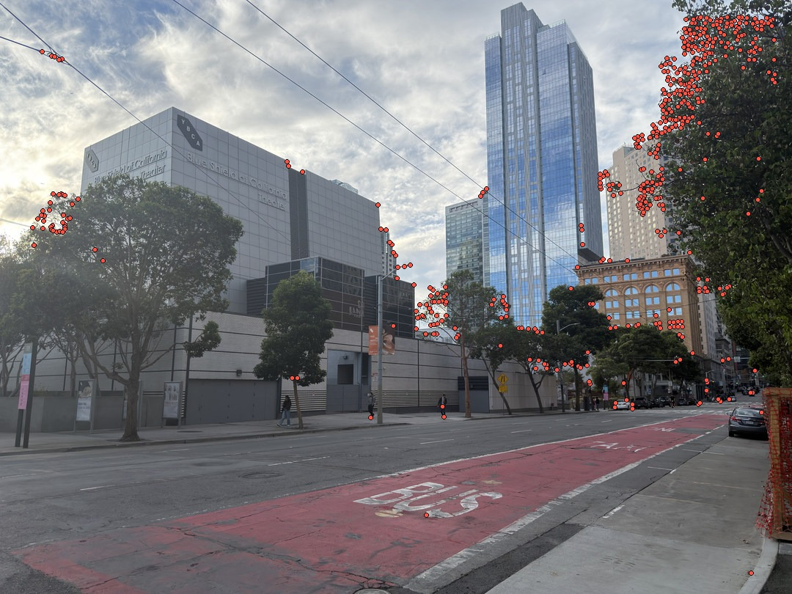

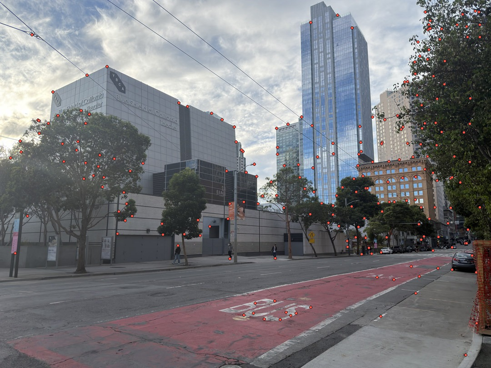

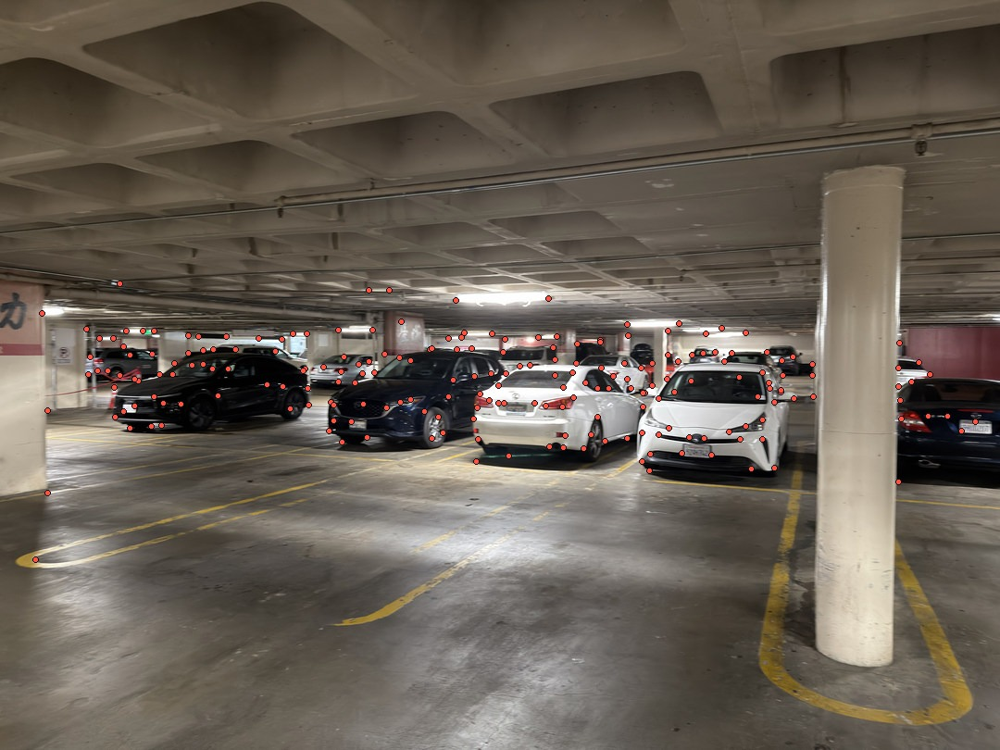

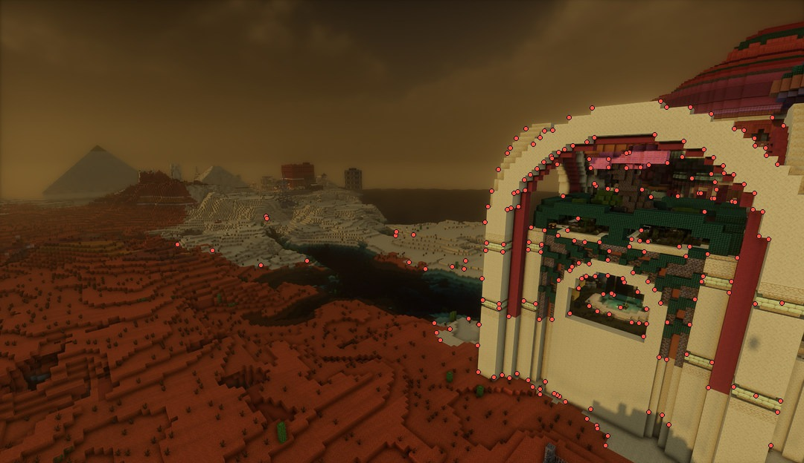
Normalize local appearance
A blurred 40×40 axis-aligned support is reduced to an 8×8 descriptor. Subtracting its mean removes additive brightness; dividing by its L2 norm reduces contrast dependence. This follows the simplified patch descriptor requested by the course rather than a rotation-invariant version.

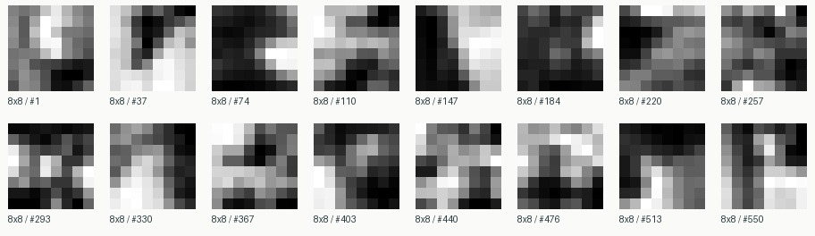

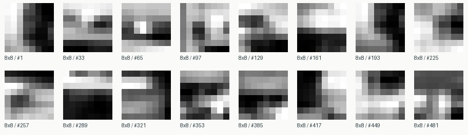

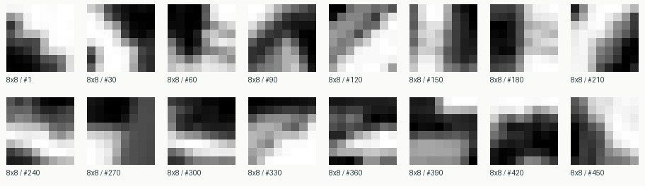
Appearance suggests candidate pairs
For each descriptor I compare its first and second nearest neighbors, retain it when the distance ratio is below 0.78, and require a mutual nearest match. The result is still imperfect; geometry provides the final check. The representative panels below show pre-RANSAC candidates from each sequence.

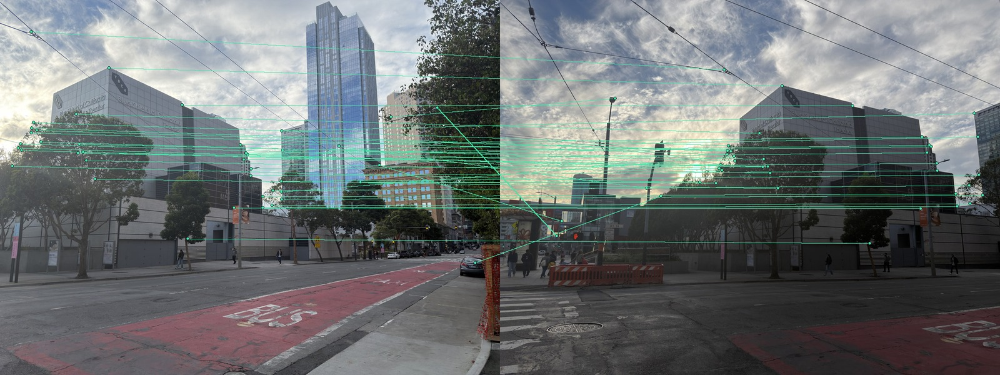

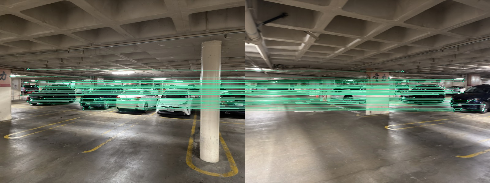

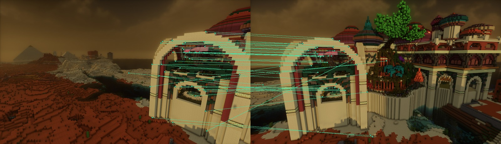
Reject outliers; stitch all frames
Each trial samples four matches, estimates H with my least-squares solver, and counts points whose forward reprojection error is below 4 px. The best set is refitted on all inliers. The same inliers are projected onto the cylinder for full-sequence placement. No high-level homography, perspective warp, or RANSAC function is called.

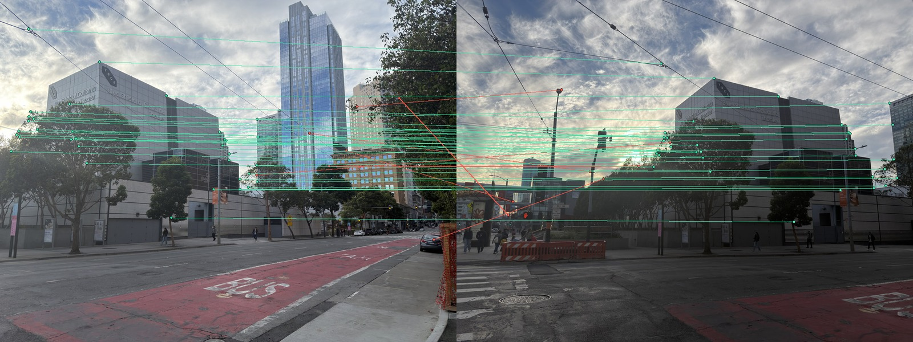


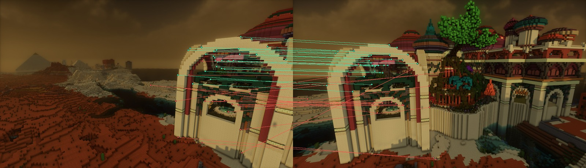
All adjacent pairs were processed
| Pair | Matches | Inliers |
|---|---|---|
| 1→2 | 41 | 34 |
| 2→3 | 157 | 130 |
| 3→4 | 122 | 89 |
| 4→5 | 97 | 72 |
| Pair | Matches | Inliers |
|---|---|---|
| 1→2 | 61 | 53 |
| 2→3 | 91 | 68 |
| 3→4 | 125 | 98 |
| 4→5 | 115 | 107 |
| 5→6 | 64 | 47 |
| 6→7 | 194 | 152 |
| 7→8 | 181 | 157 |
| 8→9 | 97 | 64 |
| 9→10 | 42 | 19 |
| Pair | Matches | Inliers |
|---|---|---|
| 1→2 | 46 | 27 |
| 2→3 | 58 | 44 |
| 3→4 | 15 | 9 |
| 4→5 | 37 | 21 |
The narrow 3→4 overlap is hardest, yet yields nine geometric inliers.
Manual and automatic full-sequence results
The following pairs use identical source images and cylindrical projection. Only the correspondence source changes. Click either result for the full-resolution image; this matters especially for the ten-frame garage panorama.
Outdoor · 5 of 5 frames

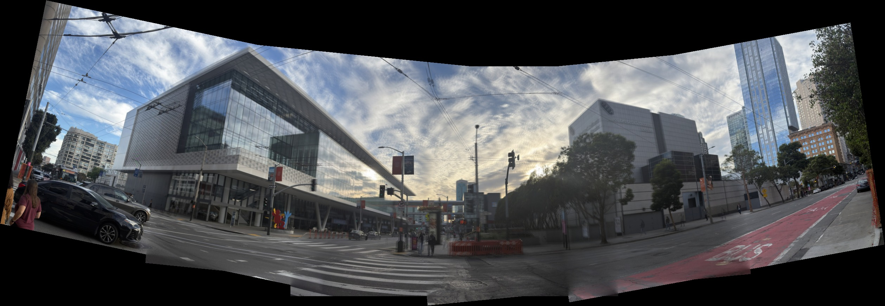
Indoor garage · 10 of 10 frames

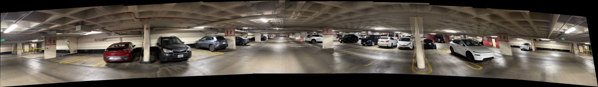
Virtual architecture · 5 of 5 frames

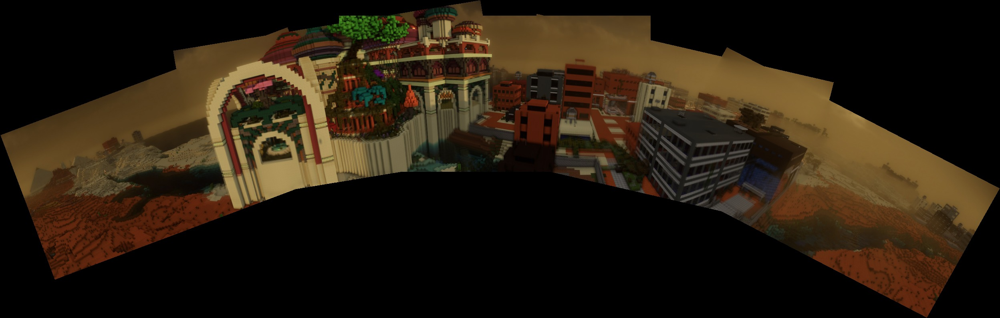
Why the garage column ghosts
The near white column shifts against the distant parked cars between overlapping camera views. RANSAC correctly aligns the dominant background, but one global transform cannot also align the column at a different depth. Feather blending averages both projected column edges, producing a translucent double contour. This is mainly capture parallax exposed by the global-warp and blending model, rather than a failed correspondence fit.
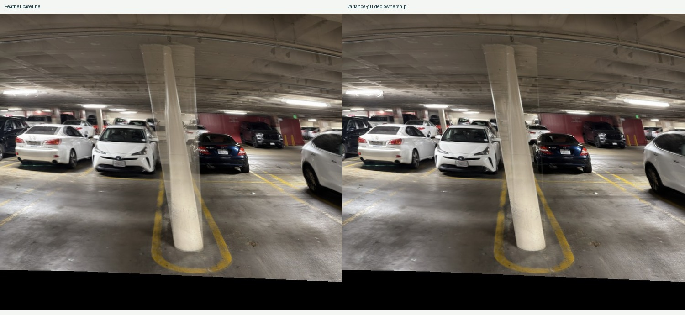
What the panorama needs
Reliable correspondences
Sixteen checked points per pair give a manual reprojection RMS range of 0.49–2.80 px. Automatic detection and descriptor matching recover enough geometrically consistent points in all 17 pairs.
The right target surface
Planar homographies work for moderate spans and rectification. A cylinder keeps all 20 input frames useful across three wide sweeps without forcing a single unstable planar canvas.
Visible limits
The deeper floor rectification enlarges distant pixels and loses sharpness. Nearby objects create parallax ghosts. These are source-resolution and scene-geometry limits, not missing interpolation samples.
Run from the archive root
python code/main.py --data-root code/data --output results
The archive contains the resized source frames, final correspondence JSON, Python implementation, this offline HTML report, and a printed PDF. The metrics JSON records all fitted matrices, per-pair counts, and mosaic canvas sizes.
Course and method
Official Part A · Official Part B · Brown, Szeliski, and Winder: Multi-Image Matching Using Multi-Scale Oriented Patches.
The descriptor implementation uses the axis-aligned 8×8 simplification specified for this project.